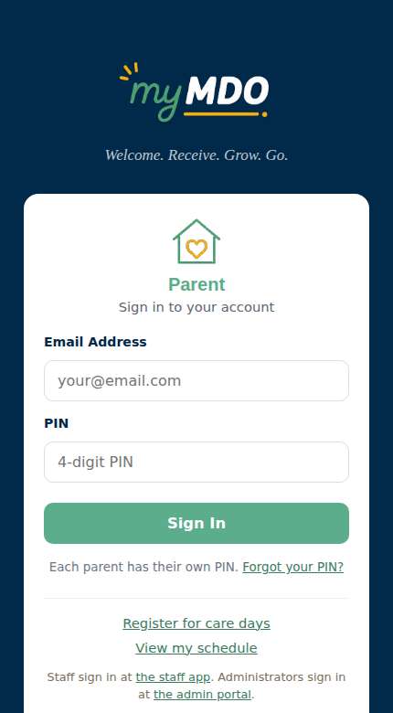
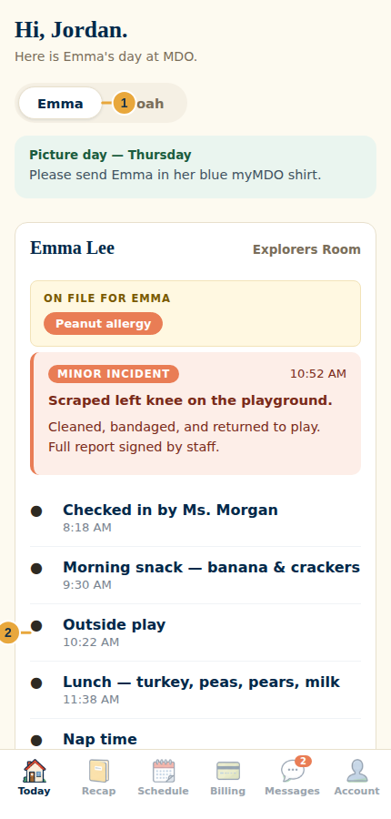
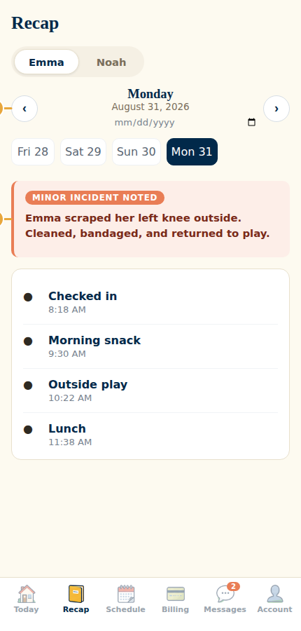
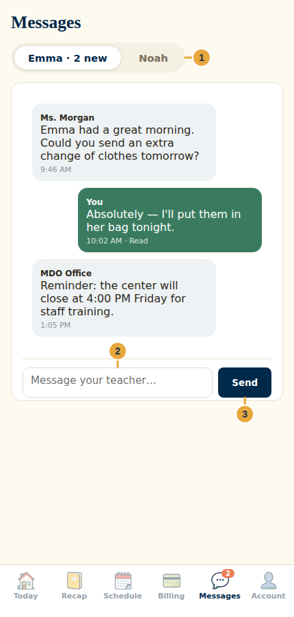
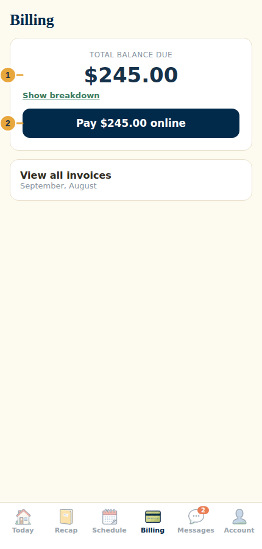
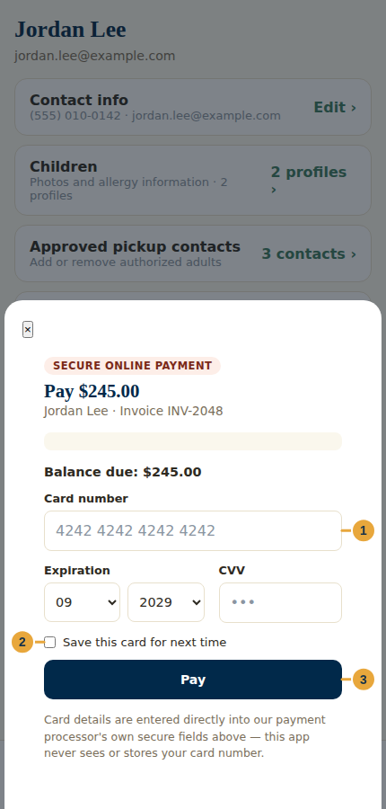
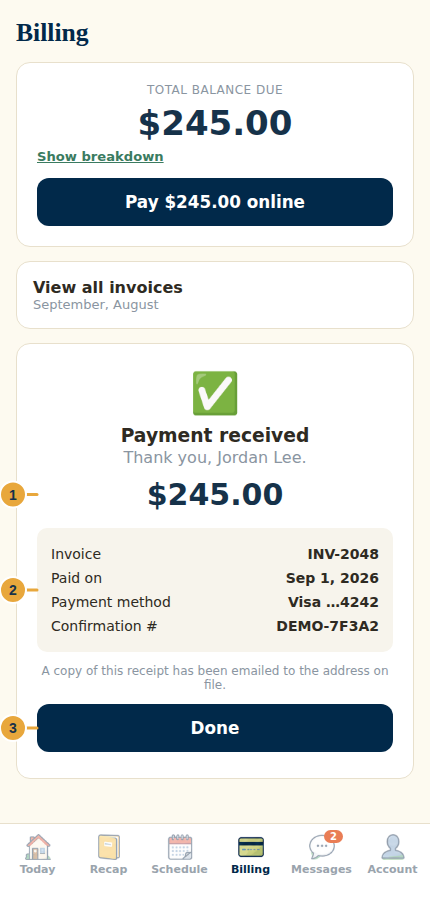
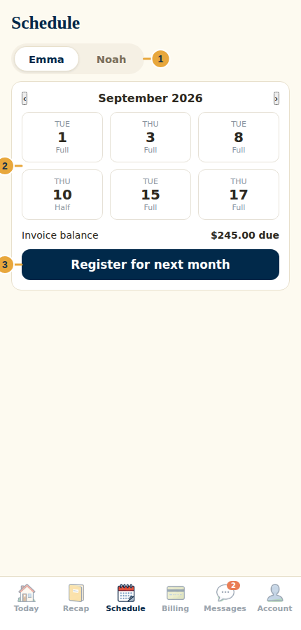
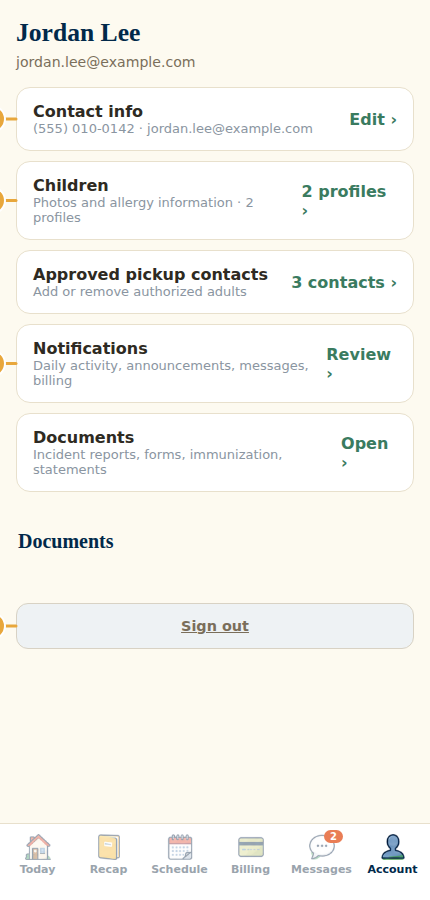

Parent
Parent
Parent Guide
Daily care updates, messages, billing, payments, schedule, and account
September 2026 · v1
mdo.timothystl.org
Timothy Lutheran Church — Mother's Day Out
6704 Fyler Ave, St. Louis, MO 63139 · (314) 781-8673 · mdo@timothystl.org
Start here
The portal has six areas: Today, Recap, Schedule, Billing, Messages, and Account. If you have more than one enrolled child, use the child switcher near the top of Today, Recap, Schedule, or Messages to swap between them.
What parents do — and what staff do
- Staff record the physical arrival and departure from the classroom. Parents do not tap a "check in" button in the Parent Portal — the classroom team does that on their own room tablet or phone.
- Parents use Today to confirm a child's arrival was recorded and to follow care updates through the day.
- Parents use Messages for child-specific, non-urgent communication with the classroom and office.
- Parents use Billing to review issued invoices and make a secure online payment.
- For an urgent pickup, health, or safety issue, call the center at (314) 781-8673 instead of relying on an app message.
Sign in

- Go to mdo.timothystl.org in any browser, or tap the myMDO shortcut if you saved one to your home screen.
- Enter the email address on file for your family account.
- Enter your PIN, then tap Sign In. PINs are 4–8 digits and are set per parent — you and your co-parent each have your own.
Your session normally stays signed in on a personal device. On a shared device, open Account and tap Sign out when you're finished. Several incorrect attempts will lock the account — contact the office if the app says it's locked. If you forgot your PIN, use Forgot your PIN? on the sign-in screen and follow the email instructions.
Follow today's care


- Use the child switcher at the top when your family has more than one child enrolled.
- Look for a Checked in event near the top of the timeline once classroom staff receive your child. A later Checked out event records departure.
- Read events in time order: meals and snacks, naps, diapers, outside time, supply needs, and photos.
- An allergy or care-note card sits above the timeline whenever one is on file — it's worth a glance the first time you sign in, and the app will ask you to confirm it's still accurate.
- A red incident notice appears above the timeline if one was filed. Follow the center's instructions for any signature or follow-up it asks for.
- Open Recap to pick an earlier date and read that day's full timeline the same way.
A simple daily routine
- After drop-off: open Today and confirm the check-in appears.
- During the day: glance at meals, naps, diapering, and photos as your schedule allows.
- Before pickup: check for any announcement or incident notice.
- After pickup: use Recap for a full, unhurried read of the day.
Message your child's team

- Open Messages. A badge on the tab bar signals unread activity.
- Choose the correct child before writing — each child has a separate thread, so the right classroom team sees it.
- Type a concise message and tap Send. The child's classroom team and the office can both read the thread.
- Watch the delivery label beneath your message: it changes from sent to read once a staff member opens the thread.
Good message topics include a routine schedule change, a non-urgent pickup note, a comfort-item reminder, or a follow-up to something a teacher mentioned. Include your child's name and the date whenever the context might be unclear.
Billing and paying online
The Billing tab shows invoices the center has issued. The total shown is the unpaid balance across every issued invoice — not just the newest one. Online card payments are entered directly into secure fields hosted by the center's payment processor, Stax; myMDO never sees or stores your full card number.
Step 1 — Review the balance

- Open Billing and check the family name and total balance due.
- Tap Show breakdown to see how the total is spread across unpaid invoices.
- Open View all invoices to review an invoice's number, bill date, care days, amount billed, payments already recorded, and remaining balance.
- If something looks wrong, stop before paying and contact the office with the invoice number.
The main Pay online button pays the most recent unpaid invoice and can include older unpaid balances in the same charge. Read the breakdown before confirming the amount.
Step 2 — Enter the payment securely

- Confirm the amount shown. Some families see Pay a different amount when partial-payment support is turned on; a partial payment always applies to the oldest outstanding balance first and cannot exceed the total balance.
- Enter the card number, expiration date, and security code in the secure fields.
- Check Save this card for next time only on a personal device you trust — it stores an encrypted reference with Stax, not the card number, for a faster payment later.
- Tap Pay, then wait for the result. Don't tap repeatedly or refresh the page while it's processing.
Step 3 — Save the receipt

- Look for the success message and verify the amount.
- Record the confirmation number if you'll need it for a reimbursement or an office question.
- A copy is emailed automatically to the address on file — return to Billing afterward to confirm the updated balance.
Payment troubleshooting
- Invoice is missing: only issued invoices appear here. Ask the office whether it's been sent yet.
- Amount looks unexpected: open the invoice and read the balance breakdown before paying.
- Card is declined: double-check the number, expiration, security code, and billing ZIP code, or try a different card. Your bank can usually give more detail than the payment screen does.
- Payment succeeded but the balance looks unchanged: allow a short processing window, then refresh. Contact the office with the confirmation number if it still doesn't match.
- Need a correction or a refund: contact the office at (314) 781-8673 or mdo@timothystl.org. Don't submit a second payment to try to offset the first.
Review or register your schedule

- Open Schedule, then choose the correct child at the top.
- Use the month arrows to review booked care days. Each tile shows the date and whether it's a Full or Half day booking.
- Read the invoice status and balance shown for that month. Open Billing when you need the full invoice detail or a payment.
- Tap Register for next month to open Calendar Registration and select a new month of care days.
The Schedule tab itself is read-only. A day marked locked belongs to a standing recurring schedule and can't be removed here — contact the office to request a change. If a submitted date is missing, double-check the child and month first, then contact the office before paying an invoice that doesn't match what you expect.
Account, documents, and notifications

- Open Account and verify your name, email, and phone number. Use Edit to update your phone number and confirm the new value was saved.
- Open Children to review each profile photo and allergy information. Contact the office for legal-name, custody, medical, or other safety-critical corrections.
- Open Approved pickup contacts to add or remove an authorized adult per the center's policy. Recheck the saved list before relying on it for pickup.
- Open Notifications and choose alerts for daily activity, announcements, messages, and billing. Your device or browser may also need to allow notification permission.
- Open Documents for incident reports, center policies and forms, immunization or medical uploads, statements, and a year-end childcare tax statement.
- On a shared device, return to Account and tap Sign out when finished.
Parent quick reference
| I need to… | Go to | Best action |
|---|---|---|
| Confirm my child arrived | Today | Look for the staff-recorded check-in event |
| Review yesterday (or another day) | Recap | Choose the date and read the full timeline |
| Ask a non-urgent question | Messages | Select the right child, write clearly, watch Sent/Read |
| See what's owed | Billing | Review the total due, the breakdown, and invoice detail |
| Pay securely | Billing → Pay online | Confirm the amount, use the secure fields, save the receipt |
| See booked days | Schedule | Review by child/month; contact the office for locked-day changes |
| Change alerts or pickup contacts | Account | Update, save, and verify the result |
| Get a year-end tax statement | Account → Documents | Download once payments for the period are on file |
Timothy Lutheran Mother's Day Out
6704 Fyler Ave, St. Louis, MO 63139
Office: (314) 781-8673 · Email: mdo@timothystl.org
Parent Portal: mdo.timothystl.org/parent